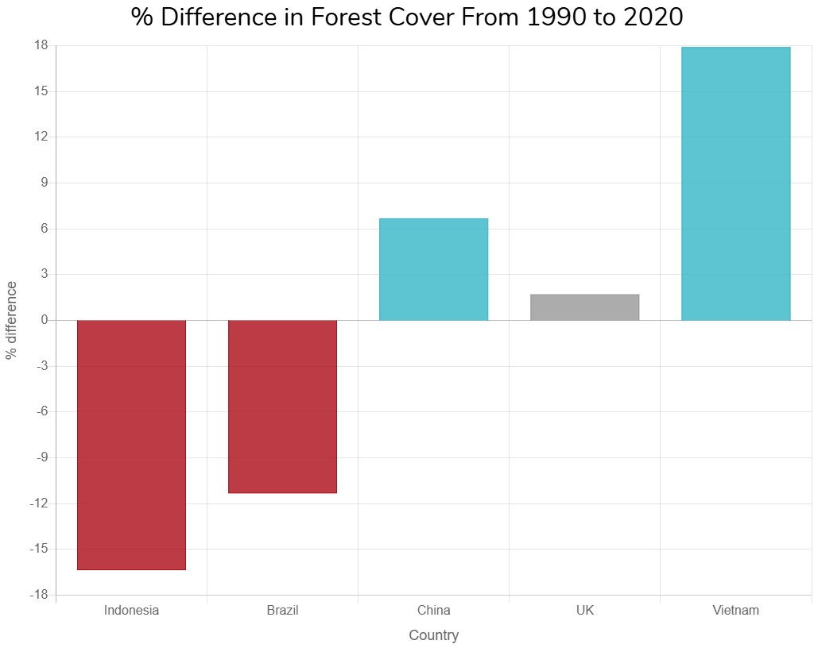

Forests are getting cut down and it is bad news! Please read on to find out how to save them and more...
You can use paper from managed forests. You can also help by replanting trees.
Cut down forests and not put paper in the normal bin.
Vietnam has made significant strides in reforestation efforts, achieving remarkable progress in planting trees and expanding forest cover. A major goal is to plant 1 billion trees.
The UK can significantly contribute to reforestation efforts by implementing policies that encourage tree planting and natural regeneration, investing in forestry projects, and promoting sustainable land management practices. This includes protecting existing forests, maximizing biodiversity recovery, and ensuring the long-term sustainability of new woodlands.
Now that you know about all of this you can plant trees knowing you are making a difference to everybodys home (the world)!